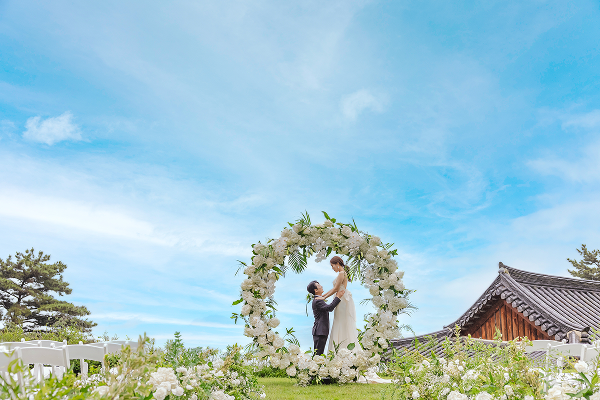
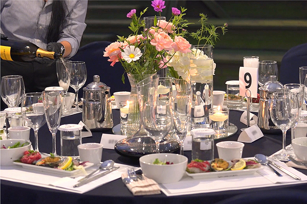
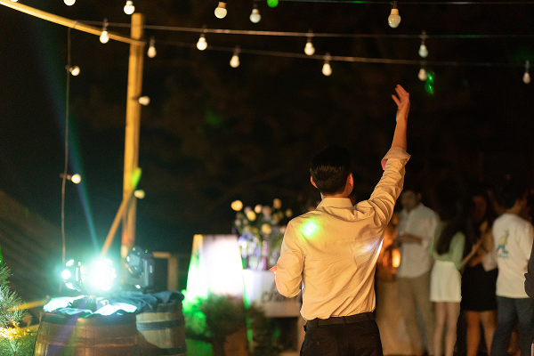
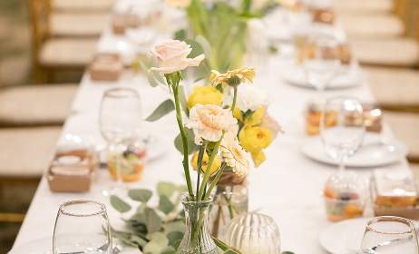
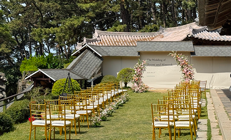
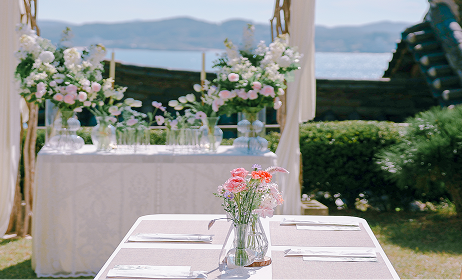
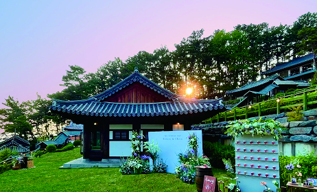

웨딩
규모와 형태에 따라 바다와 한옥을 배경으로 야외에서 진행되는 축복의 웨딩.
상상만 하던 로망을 현실로 바꿀 수 있습니다.
웨딩
바다와 하늘, 고즈넉한 한옥을 배경으로 계절과 시간의 흐름을 오롯이 느낄 수 있는 상화원에서 특별한 순간을 맞이해 보세요.
1일 1팀 단독 진행으로 여유로운 예식이 가능하며, 평생 기억될 인생의 특별한 순간을
가족과 지인의 축하 속에서 인생의 동반자와 여행을 떠나온 듯 여유롭게 즐기시길 바랍니다.

규모와 형태에 따라 바다와 한옥을 배경으로 야외에서 진행되는 축복의 웨딩.
상상만 하던 로망을 현실로 바꿀 수 있습니다.

은은한 조명 아래, 서해 바다를 온전히 품은 푸른 잔디정원에서,
가족·지인들과 즐거운 담소의 시간을 가지며 품격있는 만찬을 즐기실 수 있습니다.

브라이덜 샤워, 웨딩 애프터파티, 하우스파티, 갈라디너, 가족 피로연 등
누구의 방해도 받지 않고 오롯이 즐길 수 있는 파티로 특별한 날의 여운을 더욱 풍성하게 이어갈 수 있습니다.
정형화된 웨딩에서 벗어나, 새로운 반려자와 함께 시작하는 처음을, 온전히 개별 맞춤형으로 진행할 수 있습니다.





진행 가능 장소 : 죽도 상화원
해송 사이로 보이는 서해바다의 풍경이 있는 아늑한 객실에서의 휴식은 또 하나의 여운과 감미로운 추억을 선사합니다.
음향 혹은 영상 장비 업그레이드 진행 시, 추가비용이 발생할 수 있습니다.
기차 예약(용산 ↔ 대천) 서비스 지원(5월 주말 승차권 확보 중)